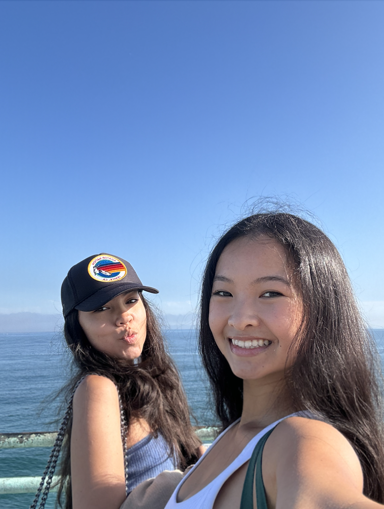

About
Welcome to my website! My name is Aileen Ho. I am a current third-year student at USC majoring in Economics. After graduating, I aspire to be a management consultant. Outside of my studies, I am involved in OWN IT, a one-day leadership summit highlighting female and binary leaders' voices. Outside of school, I like to hike, grab a cup of matcha, explore new places in LA, and I also work for a pretty cool search firm in the firnancial services space!
This is my digital diary for my time at USC. Here, you'll find information about my life at USC and some career stuff as well. I hope you'll find this helpful as a glimpse into life as a USC student!